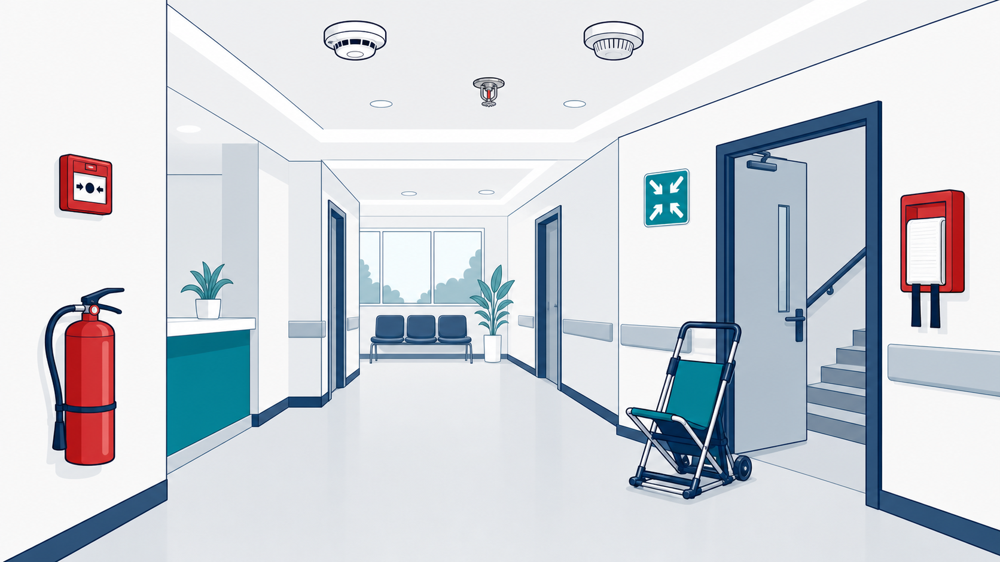

MODULE 01
Facility Management & Safety
~55 minutes
✦hs1-000 · L1 Title · title visual · supplied client logo and background onlyFacility Management & Safety · official client logo and palette applied to every reference screen.
storyboard.md; screenshots, policy values and hotspot coordinates remain subject to the module’s source lock.MODULE 01
~55 minutes
✦hs1-000 · L1 Title · title visual · supplied client logo and background onlyL3 Content · Section 0 — Welcome
3 icons: Protect patients · Protect you · Pass the CBAHI survey; "9 short sections · resume any time"
hs1-001 · content_slide · screen visual reference only · inspect final responsive build before approvalL4 Question · Section 0 — Welcome
"How confident are you to act in a fire right now?" 1–4
hs1-002 · poll · screen visual reference only · inspect final responsive build before approvalL3 Content · Section 1 — CBAHI FMS chapter overview
Survey requirement · Everyone's responsibility · One connected system
hs1-101 · content_slide · screen visual reference only · inspect final responsive build before approvalL3 Content · Section 1 — CBAHI FMS chapter overview
Icon grid of 8 plans (own SVG). Each region opens: purpose + 4 main functions
hs1-102 · hotspot · screen visual reference only · inspect final responsive build before approvalL3 Content · Section 1 — CBAHI FMS chapter overview
"A fire is a Code Red. A chemical spill is a Code Orange."
hs1-103 · content_slide · screen visual reference only · inspect final responsive build before approvalL4 Question · Section 1 — CBAHI FMS chapter overview
8 pairs: plan ↔ purpose (one sentence each)
hs1-104 · matching · screen visual reference only · inspect final responsive build before approvalL3 Content · Section 2 — Occupational Health & Safety
Health · Safety · Hazard · Risk (front term, back definition + example)
hs1-201 · flashcards · screen visual reference only · inspect final responsive build before approvalL3 Content · Section 2 — Occupational Health & Safety
Near miss · First aid · Medical treatment · Lost time · Fatality. Near miss tagged "most valuable to report"
hs1-202 · accordion · screen visual reference only · inspect final responsive build before approvalL3 Content · Section 2 — Occupational Health & Safety
Circular SVG: Anticipate → Recognise → Evaluate → Control
hs1-203 · labeled_diagram · screen visual reference only · inspect final responsive build before approvalL4 Question · Section 2 — Occupational Health & Safety
Order most → least effective: Elimination, Substitution, Engineering, Administrative, PPE
hs1-204 · sorting · screen visual reference only · inspect final responsive build before approvalL5 Scenario · Section 2 — Occupational Health & Safety
Corridor with a trailing cable across a walkway near a patient waiting area (illustration). 3 nodes: (1) what do you do first; (2) which control is strongest (re-route …
hs1-205 · decision_scenario · screen visual reference only · inspect final responsive build before approvalL3 Content · Section 2 — Occupational Health & Safety
Department Safety Liaison (ask your supervisor on day 1) · Right to stop unsafe work · Right to be consulted · Right to training
hs1-206 · accordion · screen visual reference only · inspect final responsive build before approvalL3 Content · Section 3 — Disaster management
11 cards: front = code name + colour chip (bilingual EN/AR), back = meaning + extension (pending D2)
hs1-301 · flashcards · screen visual reference only · inspect final responsive build before approvalL4 Question · Section 3 — Disaster management
8 pairs (randomised): Red–Fire, Orange–Hazmat spill, White–Violent situation, Black–Bomb threat, Pink–Child/infant abduction, Blue–Cardiac arrest, Yellow–External disaster, Brown–Utility failure
hs1-302 · matching · screen visual reference only · inspect final responsive build before approvalL3 Content · Section 3 — Disaster management
Hospital Evacuation (go to assembly point) · End of Disaster (stand down only on this signal)
hs1-303 · content_slide · screen visual reference only · inspect final responsive build before approvalL4 Question · Section 3 — Disaster management
Recognise → Activate → Respond → Stand down
hs1-304 · sorting · screen visual reference only · inspect final responsive build before approvalL3 Content · Section 3 — Disaster management
ERT diagram: Safety · Security · Nursing · Facility · Operation around an Incident Commander
hs1-305 · labeled_diagram · screen visual reference only · inspect final responsive build before approvalL3 Content · Section 4 — Fire safety
Triangle: Heat · Fuel · Oxygen. Callout: "Smoke, not flame, is the leading cause of death."
hs1-401 · labeled_diagram · screen visual reference only · inspect final responsive build before approvalL4 Question · Section 4 — Fire safety
Rescue → Alarm → Contain → Extinguish/Evacuate
hs1-402 · sorting · screen visual reference only · inspect final responsive build before approvalL4 Question · Section 4 — Fire safety
Pull → Aim (low, at the base) → Squeeze → Sweep
hs1-403 · sorting · screen visual reference only · inspect final responsive build before approvalL3 Content · Section 4 — Fire safety
Clinic corridor illustration with 8 regions: smoke detector, heat detector, call point, extinguisher, fire blanket, sprinkler, evacuation chair, assembly-point sign

hs1-404 · hotspot · screen visual reference only · inspect final responsive build before approvalL4 Question · Section 4 — Fire safety
Items: "Burning paper bin", "Petrol leak", "Smoking photocopier", "Magnesium shavings", "Pantry pan fire" → targets Class A / B / C / D / K
hs1-405 · drag_drop · screen visual reference only · inspect final responsive build before approvalL3 Content · Section 4 — Fire safety
Horizontal (first response, same floor) · Vertical (stairwells, never elevators) · Full (whole building, assembly point)
hs1-406 · tabs · screen visual reference only · inspect final responsive build before approvalL4 Question · Section 4 — Fire safety
"Smoke in Room 3; fire doors at the end of the corridor; patients on the same floor are not in danger yet. First move?" → Horizontal to the …
hs1-407 · mcq · screen visual reference only · inspect final responsive build before approvalL4 Question · Section 4 — Fire safety
"Oxygen is flammable." → False: oxidiser, intensifies fire
hs1-408 · true_false · screen visual reference only · inspect final responsive build before approvalL5 Scenario · Section 4 — Fire safety
Night shift: smoke from a waste bin in a patient room. Nodes: (1) first action (rescue patient); (2) the call — what to say (code, location, ID & …
hs1-409 · decision_scenario · screen visual reference only · inspect final responsive build before approvalL3 Content · Section 4 — Fire safety
7 icons: candles · unauthorised welding · extensions · heaters/boilers · smoking & vaping · unauthorised microwaves · uncontrolled flammables
hs1-410 · content_slide · screen visual reference only · inspect final responsive build before approvalL3 Content · Section 5 — Hazardous materials & waste
Approved procurement only · On the inventory with SDS · Never accept an unlabelled container
hs1-501 · content_slide · screen visual reference only · inspect final responsive build before approvalL4 Question · Section 5 — Hazardous materials & waste
9 pairs: pictogram (own SVG via left_html image or name) ↔ hazard
hs1-502 · matching · screen visual reference only · inspect final responsive build before approvalL4 Question · Section 5 — Hazardous materials & waste
Place 4 labels: Health (blue) · Flammability (red) · Reactivity (yellow) · Special (white)
hs1-503 · labeled_diagram · screen visual reference only · inspect final responsive build before approvalL4 Question · Section 5 — Hazardous materials & waste
Diamond shows Health 3 · Flammability 0 · Reactivity 1 · Special W. "What does this tell you before opening?" → serious health hazard; do not use water
hs1-504 · mcq · screen visual reference only · inspect final responsive build before approvalL3 Content · Section 5 — Hazardous materials & waste
Storage per SDS · Designated carts & routes · PPE per SDS · Flammable cabinet (double-walled, self-latching) · SDS at point of use
hs1-505 · accordion · screen visual reference only · inspect final responsive build before approvalL3 Content · Section 5 — Hazardous materials & waste
"Find your nearest one today." "Flush ≥ 15 minutes." Photo of a unit (own)
hs1-506 · content_slide · screen visual reference only · inspect final responsive build before approvalL5 Scenario · Section 5 — Hazardous materials & waste
3 short cases: (a) small spill of hand rub; (b) a spill over the threshold of surface disinfectant; (c) a few mL of a highly toxic reagent → …
hs1-507 · decision_scenario · screen visual reference only · inspect final responsive build before approvalL4 Question · Section 5 — Hazardous materials & waste
Items: used needle, blood-soaked dressing, paper towel (clean), scalpel blade, gloves with body fluid, food wrapper → General / Infectious / Sharps
hs1-508 · drag_drop · screen visual reference only · inspect final responsive build before approvalL3 Content · Section 6 — Security
People: ID always · contractor permits · visitor badges · Premises: CCTV · lost & found → Security · designated parking · no smoking anywhere
hs1-601 · tabs · screen visual reference only · inspect final responsive build before approvalL4 Question · Section 6 — Security
"A man without a badge is in the staff-only medication room and says he is a contractor." Best action → politely ask for permit/badge; if none, call Security …
hs1-602 · mcq · screen visual reference only · inspect final responsive build before approvalL3 Content · Section 7 — Utility
Treatment-room illustration: red emergency socket (per B6), standard socket, UPS-backed monitor, unauthorised extension (crossed), water shut-off valve, HVAC vent in isolation room
hs1-701 · hotspot · screen visual reference only · inspect final responsive build before approvalL4 Question · Section 7 — Utility
"The isolation room is cold. A visitor asks you to close the vent." → Never disable isolation-room vents; report to Maintenance
hs1-702 · mcq · screen visual reference only · inspect final responsive build before approvalL3 Content · Section 8 — Biomedical
Inspection label (date + status) · PPM schedule · "Out of Service" tag
hs1-801 · content_slide · screen visual reference only · inspect final responsive build before approvalL5 Scenario · Section 8 — Biomedical
An infusion pump's label is 2 months overdue; the ward is busy. Nodes: use or not → tag out of service → who to notify (Biomedical Engineering) → …
hs1-802 · decision_scenario · screen visual reference only · inspect final responsive build before approvalL4 Question · Section 8 — Biomedical
"Store cylinders upright and secured, with full and empty clearly separated." → True
hs1-803 · true_false · screen visual reference only · inspect final responsive build before approvalL3 Content · Section 9 — Radiation & laser safety
Ionising: X-ray, CT → dosimeters, shielding · Non-ionising: MRI, ultrasound, laser · MRI: magnet always on, screening every time · X-ray rooms: lead apron, stand behind the shield
hs1-901 · tabs · screen visual reference only · inspect final responsive build before approvalL4 Question · Section 9 — Radiation & laser safety
Justification · Optimisation · Limitation ↔ definitions
hs1-902 · matching · screen visual reference only · inspect final responsive build before approvalL3 Content · Section 9 — Radiation & laser safety
Time · Distance · Shielding around a source icon
hs1-903 · labeled_diagram · screen visual reference only · inspect final responsive build before approvalL3 Content · Section 9 — Radiation & laser safety
OSL dosimeter · Lead apron · RSO is your contact
hs1-904 · accordion · screen visual reference only · inspect final responsive build before approvalL4 Question · Section 9 — Radiation & laser safety
"A quarterly OSL reading shows 2.0 mSv. What happens?" → Notification level: you are informed and monitored (values pending B4)
hs1-905 · mcq · screen visual reference only · inspect final responsive build before approvalL4 Question · Section 9 — Radiation & laser safety
1/1M · 2/2M · 3R · 3B · 4 ↔ hazard (wording per B5)
hs1-906 · matching · screen visual reference only · inspect final responsive build before approvalL3 Content · Section 9 — Radiation & laser safety
Eyes (often no pain) · Skin burns · High voltage → Eye protection · Beam management · Control reflections · Training
hs1-907 · content_slide · screen visual reference only · inspect final responsive build before approvalL5 Scenario · Capstone and close
Mixed case: (1) during a busy clinic a cleaner knocks over a large bottle of disinfectant next to an oxygen cylinder → Code Orange or not (D1), move …
hs1-950 · game · screen visual reference only · inspect final responsive build before approvalL6 Results / close · Capstone and close
Sections = objectives hs1-o1…hs1-o10; weak_threshold 70
hs1-980 · results_breakdown · screen visual reference only · inspect final responsive build before approvalL4 Question · Capstone and close
Same question as hs1-002
hs1-981 · poll · screen visual reference only · inspect final responsive build before approvalL6 Results / close · Capstone and close
✔ Locate your evacuation route and assembly point · ✔ Save emergency numbers · ✔ Find your nearest eyewash · ✔ Ask your supervisor who your Safety Liaison …
hs1-990 · summary · screen visual reference only · inspect final responsive build before approval